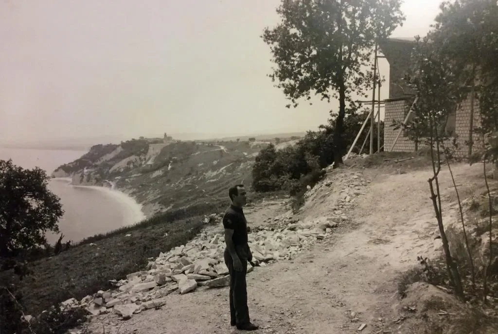
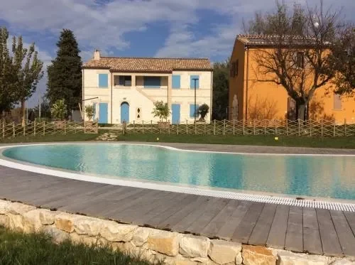
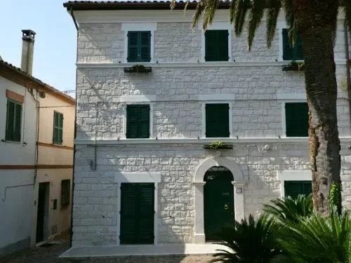
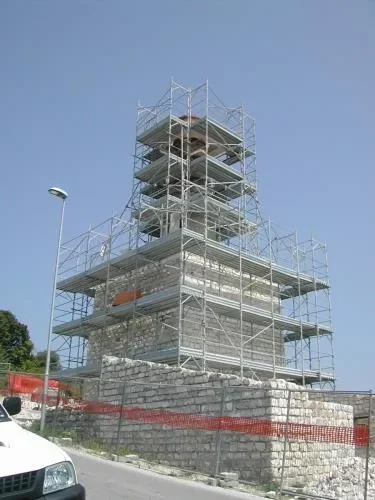

Sirolo · Pietra e paesaggio
01Casale in pietra del Conero
Progetto di Danilo e Nicola Guerri
Un mestiere che attraversa il tempo
La forza delle nostre radici.
La cura per quello che verrà.
Dagli anni Sessanta costruiamo e recuperiamo edifici a Sirolo e in provincia di Ancona. Con le mani, con la testa, con la passione di una famiglia.


Una storia di famiglia
Un’impresa di famiglia, un legame con Sirolo che dura da oltre cinquant’anni.
La nostra storia inizia nei primi anni Sessanta con Franco e Roberto Canuti. Oggi Annalisa, Pierfranco e Riccardo portano avanti il mestiere, con la stessa cura per i materiali e per le persone.
Dal recupero dei casali in pietra alle nuove abitazioni, mettiamo l’esperienza del territorio al servizio di ogni progetto. Lavoriamo con i committenti, le maestranze e i tecnici coinvolti, un cantiere alla volta.
Esperienza, responsabilità, cura. Le esigenze del cliente e le caratteristiche dell’immobile guidano ogni intervento.
Dal nostro portfolio
Interventi reali, nel territorio che conosciamo.
Sirolo · Pietra e paesaggio
01Progetto di Danilo e Nicola Guerri

Sirolo · Abitare gli esterni
02Progetto di Alessandro Riboldi

Numana · Recupero nel borgo
03Centro storico di Numana

Restauro · Memoria e materia
04Progetto di Filiberto Andreoli
Cosa possiamo fare insieme
Restituiamo vita a edifici, case e rustici. Un lavoro attento alle murature, ai materiali e alla storia di ogni luogo.
02Costruiamo ville e recuperiamo casali in dialogo con il paesaggio del Conero, tra pietra, legno e spazi aperti.
03Scopri il progetto residenziale di Castelfidardo. Contattaci per conoscere caratteristiche e disponibilità aggiornate.
Un percorso condiviso
Il tuo progetto, seguito dalle persone che lo realizzano.
Partiamo da un sopralluogo: ascoltiamo le tue esigenze e osserviamo l’immobile o il terreno.
Definiamo con te e con i tecnici il progetto, i materiali, le lavorazioni e il preventivo.
Coordiniamo il cantiere e seguiamo ogni fase, fino alla consegna delle opere concordate.
Competenze edili
Interventi ordinari e straordinari per prenderci cura degli edifici esistenti.
Nuove abitazioni, ville e spazi da vivere, dal progetto al cantiere.
Recupero e adeguamento delle strutture, con le verifiche dei tecnici coinvolti.
Nuovi spazi, tetti in legno e opere esterne su misura per ogni edificio.
Un filo diretto con la famiglia Canuti
Parla con chi segue il tuo progetto, dal primo incontro al lavoro in cantiere.
Il tuo progetto parte da qui
Compila i campi per preparare una richiesta. Potrai rileggerla e inviarla dalla tua app di posta.